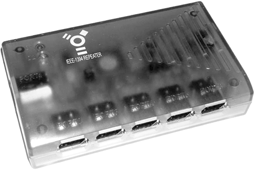
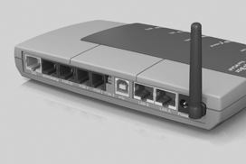
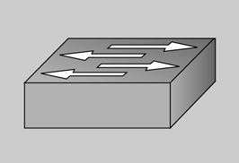

Cuando los concentradores -hubs- o repetidores multipuerto reciben una señal en un puerto, se copia a todos los puertos del concentrador, de manera que todos los elementos de la red reciben las señales. Regeneran y reenvían las señales de red como un repetidor, son el punto de conexión para los diversos elementos de la red. Son elementos de capa 1 (física). Normalmente tienen ocho, dieciséis o veinte y cuatro puertos.
Un concentrador puede llevar enchufados elementos de red (ordenadores, impresoras, etc.) y otros concentradores, de los cuales colgarán ordenadores y más concentradores.
- 
- Concentrador
Como todos los elementos de la red están conectados al mismo medio físico, y las señales que envía un elemento llegan a todos los demás, a veces se producen colisiones. Una colisión se produce cuando dos bits se propagan al mismo tiempo por la misma red. El área de la red en que se produce la colisión se denomina dominio de colisión o dominio de ancho de banda. Si tenemos una red formada por ordenadores, concentradores y repetidores, todos los elementos están en el mismo dominio de colisión.
Estos dispositivos no reconocen información a las señales, ni direcciones ni datos.
Cuando tenemos una red inalámbrica, el periférico que hace las funciones de concentrador denomina punto de acceso.
El punto de acceso actúa como un concentrador en transmitir la información recibida a todos los dispositivos móviles y al troncal -backbone- de la red.
- 
- Punto de acceso inalámbrico y concentrador en un solo aparato
Se puede instalar más de un punto de acceso en un área donde hay más traspaso de datos, o para cubrir zonas más amplias. Un punto de acceso puede transmitir y recibir señales en un radio de cien a trescientos metros dentro de un edificio según los modelo, y hasta 9,6 km utilizando antenas externas con una línea directa de visión.
Un puente Ethernet inalámbrico puede ubicarse libremente cualquier recurso en la red, prácticamente en cualquier lugar.
Cuando la distancia entre dos concentradores es demasiado grande, o queremos evitar dominios de colisión, se puede instalar un puente (bridge).
Un puente es un dispositivo de capa 2 -enlace de datos- que crea dos segmentos de red. Cada segmento tendrá un dominio de colisiones diferentes, lo que hace que se aproveche más el ancho de banda.
Los puentes también se utilizan para interconectar redes de diferentes topologías y diferentes protocolos a escala de MAC, por ejemplo una Ethernet y una red en anillo de testigo: en este caso, el puente tendrá conectores diferentes a cada lado de la red. El puente controla qué direcciones MAC pertenecen a cada segmento de red y crea unas tablas de direcciones MAC, a partir de las cuales toma decisiones. La figura muestra dos segmentos de red interconectados por un puente.
La función principal de un puente es filtrar las tramas de capa 2, sin tener que ocupar de los protocolos de red, dando los pasos siguientes:
-
Cuando le llegan los datos compara la dirección MAC de destino con las direcciones MAC de la sus tablas.
-
Si decide que la dirección MAC de destino es el mismo segmento de red, no envía los datos al resto de segmentos, proceso que se denomina filtrado. Así se reduce el tráfico entre el resto de segmentos.
-
Si decide que la dirección MAC es de otro segmento, lo envía al segmento al que pertenece.
-
Si decide que es desconocida, la envía y la difunde a todos los segmentos, proceso que se denomina inundación -flooding.
Una difusión es un paquete enviado a todos los elementos de los diferentes segmentos de la red. Son al mismo dominio de difusión los elementos de la red en torno a un puente que reciben el paquete.
Commutadors (switchs)
- 
- Símbolo de un conmutador
Los conmutadores son elementos de capa 2 -enlace de datos- que regeneran la señal y el difunden basándose en las direcciones MAC, similar a los puentes. Actualmente sustituyen los concentradores.
La conmutación se hace en el hardware, como si hiciera un puente entre los dos puertos conmutados, por lo que aprovecha todo el ancho de banda. Esto se denomina microsegmentación.
Los conmutadores con tecnología dúplex (full-duplex) no tienen colisiones, pero todos los elementos están en el mismo dominio de difusión. Actualmente hay conmutadores de gama alta que funcionan con modo multicapa y son capaces de ejecutar funciones de capa 3.